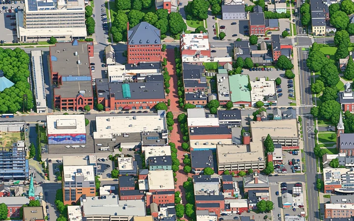
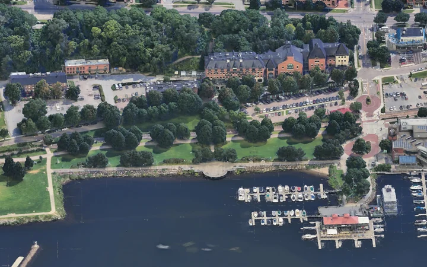
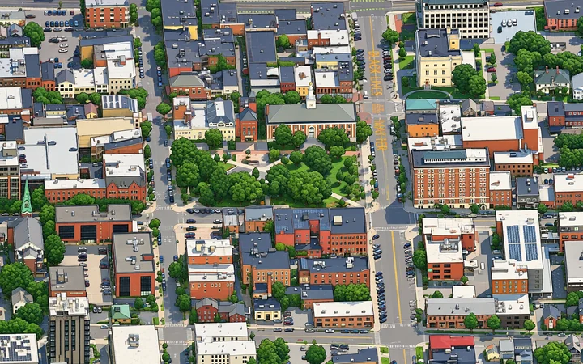
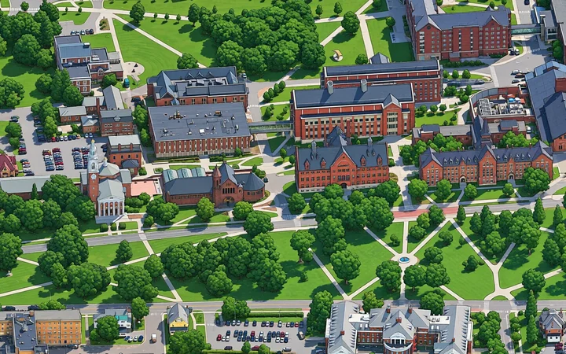
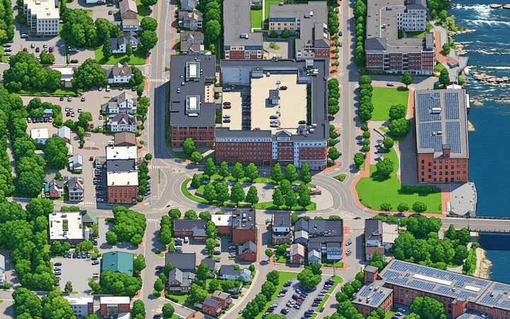

Who did what
- photographed Burlington from the air and built the 3D model every picture starts from.
- A camera I set up
- looks at that model from 30 degrees up, from four sides, and takes 458 pictures that line up to the pixel. One pixel is 23 cm of city.
- A teacher model
- redrew about 400 of those pictures as illustrations: flat colour, dark outlines, a 1990s city-builder look. Automatic checks threw out the ones that moved a building or invented a lake.
- A student model
- the open-source Qwen-Image, learned the style from those pairs and then drew all of Burlington, South Burlington and Winooski, four times over.
- Me
- chose the area, the camera and the look, decided what counted as a failed drawing, threw out and redid the worst blocks, and built the map you move around in: the turning, the real sunset, the weather, the buses, the train and the planes.
I'm not a software engineer, and I'm not an illustrator. I wrote almost none of the code by hand either. I directed AI tools the whole way through, the same way I'd brief a contractor.
Before and after
Drag across the picture. On one side is Google's 3D model of the waterfront, exactly as the camera saw it. On the other is the same view at full map resolution after the drawing model redrew it. Buildings stay where they are; the look changes, and small details are invented.

Google's modelDrawnWhat's wrong with it
A neighbour on r/burlington put it better than I could: the charm wears off when you zoom in and see mushy textures and cars melting on the streets.
That's fair, and it's worth explaining.
- The cars melt. Google's 3D model turns every parked car into a soft blob, and the drawing model faithfully inks the blob. Fixing it means redrawing the map with the streets cleaned up first.
- It goes soft when you zoom far in. The drawing has a real size, 23 cm per pixel. Past that you're enlarging it, like holding a magnifying glass to a printed poster. The street names and labels that appear up close are drawn fresh at any size, so they stay sharp.
- Small details are invented. Signs are sign-shaped, not readable. A window count may be off. Your porch might be the wrong colour. It's an illustration of the city, not a survey of it.
- It's a snapshot. Google's imagery is a year or more old, so new buildings are missing and gone ones remain.

What a hand-drawn map has that this one doesn't is a person deciding, building by building, what matters. I can't fake that with pixels, so I've stopped trying to hide it and added what I can:
- Names drawn sharp on top. Street, neighbourhood, park and water names from OpenStreetMap are lettered over the drawing as you zoom in, and stay crisp at any size. They step out of the way where a building stands in front of the street.
- A paper grain. The closer you zoom, the more the map looks like a printed sheet you're leaning into, rather than a photo blown up too far.
- Places worth a look. The ★ button and the diamond pins mark a short list of spots around town, each with a note, and let you make and share your own list.
Around town, up close
Every block from the lake up to the hill and across the river into Winooski is drawn at the same 23 cm scale—cars, buses, the Amtrak train and night lights sit right on top of it.

